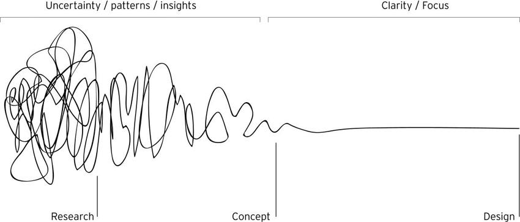

Customer Intelligence Engine
Architected a unified 4-tier knowledge framework and AI agent pipeline to consolidate customer journey data across Marketing, Sales, and Support - with zero budget.
UX Designer & Researcher
I help teams find the real problem - then build something that actually solves it.
Architected a unified 4-tier knowledge framework and AI agent pipeline to consolidate customer journey data across Marketing, Sales, and Support - with zero budget.
Reduced abandoned flows, lowered customer service calls, and simplified signup for broadband and bundle customers.
Audited a year of customer call data, ran pre/post card sorting tests, and redesigned the IVR tree - reducing misrouted calls by ~30%.
Designed and validated a Dutch-language prototype for a clinically-aligned senior health app, tested with geriatric patients.
Sole UX designer on a SaaS Electronic Data Capture system for clinical trials - built the design system and interactive prototypes from scratch.
I've spent nearly a decade turning "we have data but no idea what it means" into something teams can actually act on. I'm the person colleagues call when a spreadsheet has become a cry for help - I genuinely enjoy untangling it.
I type fast, but think slow (in a good way). I get quietly excited about statistics, SPSS, and data science in ways that probably say a lot about me. I'm not scared of technical complexity - I just need to understand it well enough to make it human.
I've been told my superpower is making messy information look inevitable in hindsight - clean, visual, and impossible to argue with. I'll take it.

Email: inguna.eihentale@gmail.com
LinkedIn: linkedin.com/in/ingunaeihentale